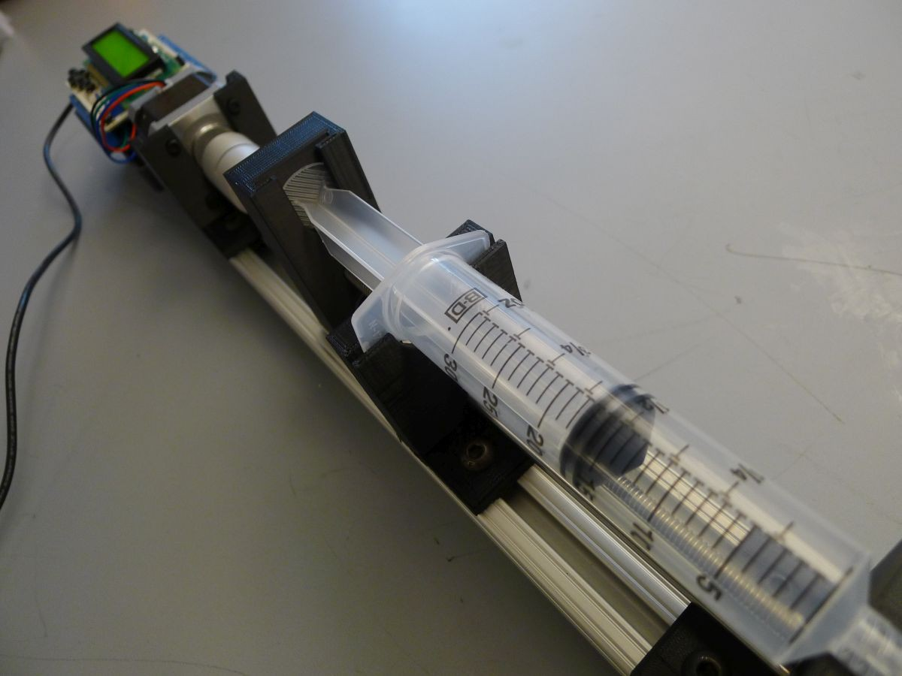
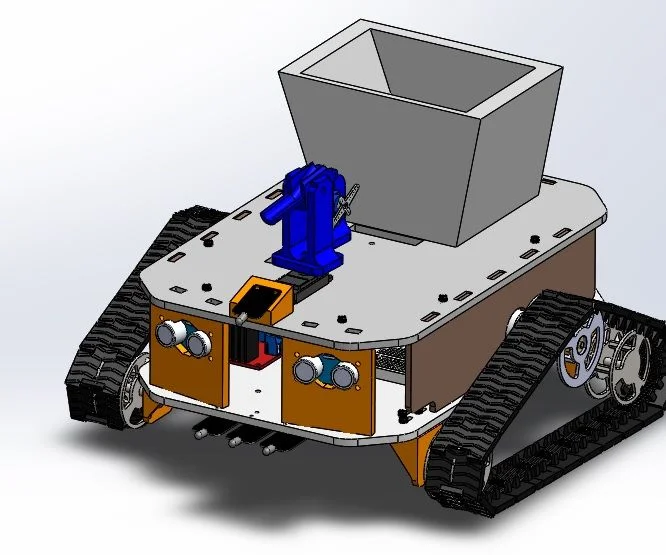

Syringe infusion Pump
A syringe infusion pump using Arduino involves incorporating several key components and functionalities. The system typically includes an Arduino board as the main controller, a stepper motor for precise movement, a motor driver for interfacing with the motor, a mechanism to hold and move the syringe plunger, a user interface for inputting parameters, and a power supply for the components.The working principle of the pump involves calibration to establish the relationship between motor steps and fluid volume. Users input parameters like infusion rate and volume through a user interface, prompting the Arduino to process the required motor steps. A control algorithm manages the motor's speed and direction to ensure a controlled infusion process. Safety features, such as emergency stop buttons and error detection, are integrated. Feedback systems like flow or pressure sensors can be added for real-time information. The Arduino code, developed using the Arduino IDE and relevant libraries, governs the entire system. Thorough testing with a liquid, documentation, and iteration are crucial for a reliable and safe syringe infusion pump.
Fire-fighting Robot
Firefighting robot project involves the development of a robotic system designed to autonomously or remotely address fire hazards. Key components include a chassis with appropriate mobility features such as wheels or tracks, motors, and wheels for efficient movement. Fire detection is achieved through sensors like infrared or flame detectors, along with the inclusion of smoke detectors. Navigation and mapping systems, incorporating sensors like ultrasonic or infrared, enable the robot to navigate environments, avoid obstacles, and plan optimal paths to the fire. The robot is equipped with a fire suppression mechanism, which can include water or foam sprayers, or a small fire extinguisher. Actuators or servos control these mechanisms. A reliable power source, typically rechargeable lithium-ion batteries, ensures sustained operation during firefighting missions. Communication systems, such as Wi-Fi or Bluetooth, enable remote control and real-time monitoring, complemented by a camera for live video feed. The control system utilizes a microcontroller or single-board computer (e.g., Raspberry Pi) to process sensor data and control actuators. Programming in languages like Python or C++ is employed to develop control algorithms for autonomous behavior. Safety features include an emergency stop mechanism and robust obstacle avoidance algorithms to prevent collisions. A user interface is designed for remote operators to control the robot manually and monitor its status. Testing involves simulations to assess the robot's performance in firefighting scenarios, followed by field testing for real-world evaluation. Documentation, including a user manual, is crucial for operation, maintenance, and troubleshooting. Regulatory compliance is considered to ensure the robot meets safety standards and regulations, especially in emergency situations. Overall, a firefighting robot project aims to enhance firefighting capabilities by deploying robots in hazardous environments, combining robotics, sensing, and fire suppression technologies for efficient and versatile firefighting solutions.